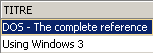
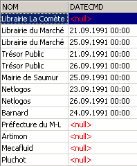
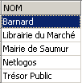

6. Profundización en el lenguaje SQL
6.1. Introduction
En este capítulo presentamos
- otras sintaxis del comando SELECT que lo convierten en un comando de consulta muy potente, especialmente para consultar varias tablas a la vez.
- sintaxis ampliadas de comandos ya estudiados
Para ilustrar los diversos comandos, trabajaremos con las siguientes tablas utilizadas para la gestión de pedidos en una empresa de distribución de libros:
6.1.1. la tabla CLIENTS
Almacena información sobre los clientes de la PME:
 |

Número que identifica al cliente de manera única —clave primaria | |
nombre del cliente | |
I = Particular, E = Empresa, A = Administración | |
nombre, en el caso de un particular | |
Apellido de la persona de contacto del cliente (en el caso de una empresa o una administración) | |
Dirección del cliente - calle | |
ciudad | |
código postal | |
Teléfono | |
¿Desde cuándo es cliente? | |
O (Sí) si el cliente le debe dinero a la empresa y N (No) en caso contrario. |
6.1.2. la tabla ARTICLES
Almacena información sobre los productos vendidos, en este caso libros. Su estructura es la siguiente:

Número que identifica un libro de manera única (ISBN = Número Internacional Normalizado del Libro) —clave primaria | |
Título del libro | |
Código que identifica de manera única a una editorial | |
Nombre del autor | |
Resumen del libro | |
Cantidad vendida en el año | |
Cantidad vendida el año anterior | |
Fecha de la última venta | |
Cantidad de la última entrega | |
Fecha de la última entrega | |
Precio de venta | |
Costo de compra | |
Cantidad mínima de pedido | |
Nivel mínimo de inventario | |
Cantidad en inventario |
Su contenido podría ser el siguiente:

6.1.3. la tabla COMMANDES
Almacena la información sobre los pedidos realizados por los clientes. Su estructura es la siguiente:

N.º que identifica un pedido de manera única —clave primaria | |
N.º de cliente que realiza este pedido - clave externa - referencia CLIENTS(ID) | |
Fecha de registro de este pedido | |
O (Sí) si el pedido se canceló y N (No) en caso contrario. |

6.1.4. La tabla DETAILS
Contiene los detalles de un pedido, es decir, las referencias y cantidades de los libros solicitados. Su estructura es la siguiente:

N.º de pedido: clave externa que hace referencia a la columna NOCMD de la tabla COMMANDES | |
N.º del libro solicitado: clave externa que hace referencia a la columna ISBN de la tabla LIVRES | |
Cantidad solicitada |
Su contenido podría ser el siguiente:

En el ejemplo anterior, se observa que el pedido n.º 3 (NOCMD) corresponde a tres libros. Esto significa que el cliente pidió tres libros al mismo tiempo. Las referencias de este cliente se pueden encontrar en la tabla [COMMANDES], donde se observa que el pedido n.º 3 fue realizado por el cliente n.º 5. La tabla [CLIENTS] nos indica que el cliente n.º 5 es la empresa NetLogos de Segré.
6.2. El pedido SELECT
Aquí nos proponemos profundizar nuestro conocimiento del pedido SELECT presentando nuevas sintaxis del mismo.
6.2.1. Sintaxis de una consulta multitabla
SELECT columna1, columna2, ... FROM tabla1, tabla2, ..., tablap WHERE condition ORDER BY ... | |
La novedad aquí radica en que las columnas columna1, columna2, ... provienen de varias tablas tabla1, tabla2, ... Si dos tablas tienen columnas con el mismo nombre, se resuelve la ambigüedad mediante la notación tablei.colonnej. El código condition puede referirse a columnas de diferentes tablas. |
Funcionamiento
Se genera la tabla cartesiana de table1, table2, ..., tablep. Si ni es el número de filas de tablei, la tabla construida tendrá, por lo tanto, n1*n2*...*np filas que contienen el conjunto de columnas de las diferentes tablas. | |
Se aplica la condition de la WHERE a esta tabla. De este modo, se genera una nueva tabla | |
Esta se ordena según el modo indicado en ORDER. | |
Se muestran las columnas solicitadas en SELECT. |
Ejemplos
Se utilizan las tablas presentadas anteriormente. Se desea conocer el detalle de los pedidos realizados después del 25 de septiembre:
SQL>select details.nocmd,isbn,qte from commandes,details
where commandes.datecmd>'25-sep-91'
and details.nocmd=commandes.nocmd

Cabe señalar que detrás de FROM se incluye el nombre de todas las tablas cuyas columnas se están referenciando. En el ejemplo anterior, todas las columnas seleccionadas pertenecen a la tabla DETAILS. Sin embargo, la condición hace referencia a la tabla COMMANDES. De ahí la necesidad de nombrar esta última detrás de FROM. La operación que comprueba la igualdad de columnas de dos tablas diferentes se denomina a menudo «equijunción».
La consulta SELECT también se podría haber escrito de la siguiente manera:
SQL> select details.nocmd,isbn,qte from commandes
inner join details on details.nocmd=commandes.nocmd
where commandes.datecmd>'25-sep-91'
Continuemos con nuestros ejemplos. Queremos el mismo resultado que antes, pero con el título del libro solicitado, en lugar de su número: ISBN:
SQL>select commandes.nocmd, articles.titre, details.qte
from commandes,articles,details
where commandes.datecmd>'25-sep-91'
and details.nocmd=commandes.nocmd
and details.isbn=articles.isbn

Se obtiene el mismo resultado con la siguiente consulta SQL, que es menos legible:
SQL> select details.nocmd,articles.titre,details.qte from details
inner join commandes on details.nocmd=commandes.nocmd
inner join articles on details.isbn=articles.isbn
where commandes.datecmd>'25-sep-91'
En el ejemplo anterior, se realizan dos uniones internas con la tabla [DETAILS]:
- una con la tabla [COMMANDES] para acceder a la fecha de pedido de un libro
- una con la tabla [ARTICLES] para tener acceso al título del libro solicitado
Además, queremos el nombre del cliente que realiza el pedido:
SQL>select commandes.nocmd, articles.titre, qte ,clients.nom
from commandes,details,articles,clients
where commandes.datecmd>'25-sep-91'
and details.nocmd=commandes.nocmd
and details.isbn=articles.isbn
and commandes.idcli=clients.id

Además, queremos las fechas de pedido y que se muestren en orden descendente:
SQL>select commandes.nocmd, commandes.datecmd, articles.titre, qte ,clients.nom
from commandes,details,articles,clients
where commandes.datecmd>'25-sep-91'
and details.nocmd=commandes.nocmd
and details.isbn=articles.isbn
and commandes.idcli=clients.id
order by commandes.datecmd descending

Estas son algunas reglas que hay que seguir en las uniones:
- Detrás de SELECT, se colocan las columnas que se desean mostrar. Si la columna existe en varias tablas, se le antepone el nombre de la tabla.
- Detrás de FROM, se colocan todas las tablas que serán exploradas por SELECT, es decir, las tablas que contienen las columnas que se encuentran detrás de SELECT y WHERE.
6.2.2. La autojunción
Queremos conocer los libros que tienen un precio de venta superior al del libro «Using SQL»:
SQL>select a.titre from articles a, articles b
where b.titre='Using SQL'
and a.prixvente>b.prixvente

Las dos tablas de la unión son idénticas en este caso: la tabla articles. Para diferenciarlas, se les asigna un alias: from artículos a, artículos b. El alias de la primera tabla se llama a y el de la segunda, b. Esta sintaxis se puede utilizar incluso si las tablas son diferentes. Al usar un alias, este debe aparecer en todo el comando SELECT en lugar de la tabla a la que hace referencia.
6.2.3. Unión externa
Queremos conocer a los clientes que compraron algo en septiembre, incluyendo la fecha del pedido. Los demás clientes se muestran sin esa fecha:
SQL>select clients.nom,commandes.datecmd from clients
left outer join commandes on clients.id=commandes.idcli
where datecmd between '01-sep-91' and '30-sep-91'

Nos sorprende que aquí no obtengamos el resultado correcto. Deberíamos tener a todos los clientes presentes en la tabla [CLIENTS], lo cual no es el caso. Al analizar cómo funciona la unión externa, nos damos cuenta de que los clientes que no han comprado se han asociado a una fila vacía de la tabla COMMANDES y, por lo tanto, a una fecha vacía (valor NULL en la terminología SQL). Por lo tanto, esta fecha no cumple la condición establecida para la fecha y el cliente correspondiente no se muestra. Probemos con otra cosa:
SQL>select clients.nom,commandes.datecmd from clients
left outer join commandes on clients.id=commandes.idcli
where (commandes.datecmd between '01-sep-91' and '30-sep-91')
or (commandes.datecmd is null)

Esta vez obtenemos la respuesta correcta a nuestra pregunta.
6.2.4. Consultas anidadas
SELECT columna[s] FROM tabla[s] WHERE expresión operador consulta ORDER BY ... | |
requête es un comando SELECT que devuelve un grupo de 0, 1 o más valores. Entonces tenemos una condición WHERE del tipo expresión operador (val1, val2, ..., vali) expression y vali deben ser del mismo tipo. Si la consulta devuelve un solo valor, se reduce a una condición del tipo expresión operador valor que conocemos bien. Si la consulta devuelve una lista de valores, se podrán emplear los siguientes operadores:
expression IN (val1, val2, ..., vali): verdadero si expression tiene como valor uno de los elementos de la lista vali.
inverso de IN
debe ir precedido de =, !=, >, >=, <, <= expression >= ANY (val1, val2, ..., valn): verdadero si expression es >= a uno de los valores vali de la lista
debe ir precedido de =, !=, >, >=, <, <= expression >= ALL (val1, val2, .., valn): verdadero si la expresión es >= a todos los valores válidos de la lista
consulta: verdadera si la consulta requête devuelve al menos una fila. |
Ejemplos
Retomamos la pregunta ya resuelta mediante una equijunción: mostrar los títulos que tengan un precio de venta superior al del libro «Using SQL».
SQL>select titre from ARTICLES
where prixvente > (select prixvente from ARTICLES where titre='Using SQL')

Esta solución parece más intuitiva que la de la unión equi. Primero se aplica un filtro con un SELECT, y luego un segundo filtro sobre el resultado obtenido. De esta manera, se pueden realizar varios filtros en serie.
Queremos conocer los títulos cuyo precio de venta sea superior al precio promedio de venta:

¿Quiénes son los clientes que han pedido los títulos resultantes de la consulta anterior?
SQL>select distinct idcli from COMMANDES,DETAILS
where DETAILS.isbn in
(select isbn from ARTICLES where prixvente
> (select avg(prixvente) from ARTICLES))
and COMMANDES.nocmd=DETAILS.nocmd

Explicaciones
- Se seleccionan en la tabla DETAILS los códigos ISBN que se encuentran entre los libros cuyo precio es superior al precio promedio de los libros.
- En las filas seleccionadas en el paso anterior no aparece el código de cliente IDCLI. Este se encuentra en la tabla COMMANDES. La relación entre las dos tablas se establece mediante el n.º de pedido NOCMD, de ahí la unión equi en COMMANDES.nocmd=DETAILS.nocmd.
- Un mismo cliente puede haber comprado varias veces uno de los libros en cuestión, en cuyo caso su código IDCLI aparecerá varias veces. Para evitar esto, colocamos la clave DISTINCT después de SELECT. DISTINCT, en general, elimina los duplicados en las filas resultantes de un SELECT.
- Para obtener el nombre del cliente, tendríamos que realizar una unión equi entre las tablas COMMANDES y CLIENTS, tal como se muestra en la siguiente consulta.
SQL> select distinct CLIENTS.nom from COMMANDES,DETAILS,CLIENTS
where DETAILS.isbn in
(select isbn from ARTICLES where prixvente
> (select avg(prixvente) from ARTICLES))
and COMMANDES.nocmd=DETAILS.nocmd
and COMMANDES.IDCLI=CLIENTS.ID

Encontrar a los clientes que no han realizado ningún pedido desde el 24 de septiembre:
SQL>select nom from CLIENTS
where clients.id not in
(select distinct commandes.idcli from commandes where datecmd>='24-sep-91')

Hemos visto que se pueden filtrar filas de otra manera que no sea con la cláusula WHERE: utilizando la cláusula HAVING junto con la cláusula GROUP BY. La cláusula HAVING filtra grupos de líneas.
Al igual que en la cláusula WHERE, la sintaxis
HAVING expression opérateur requête
es válida, con la restricción ya mencionada de que expression debe ser una de las expresiones expri de la cláusula
GROUP BY expr1, expr2, ...
Ejemplos
¿Cuáles son las cantidades vendidas de los libros con más de 200F?
Primero veamos las cantidades vendidas por título:
SQL>select ARTICLES.titre,sum(qte) QTE from ARTICLES, DETAILS
where DETAILS.isbn=ARTICLES.isbn
group by titre

Ahora, filtremos los títulos:
SQL> select ARTICLES.titre,sum(qte) QTE from ARTICLES, DETAILS
where DETAILS.isbn=ARTICLES.isbn
group by titre
having titre in (select titre from ARTICLES where prixvente>200)

De una manera quizás más clara, se podría haber escrito:
SQL>select ARTICLES.titre,sum(qte) QTE from ARTICLES, DETAILS
where DETAILS.isbn=ARTICLES.isbn
and ARTICLES.prixvente>200
group by titre

6.2.5. Consultas correlacionadas
En el caso de las consultas anidadas, hay una consulta principal (la más externa) y una consulta secundaria (la más interna). La consulta principal solo se evalúa una vez que la consulta secundaria se ha evaluado por completo.
Las consultas correlacionadas tienen la misma sintaxis, con la siguiente diferencia: la consulta hija realiza una unión con la tabla de la consulta madre. En este caso, el conjunto formado por la consulta madre y la consulta hija se evalúa repetidamente para cada fila de la tabla madre.
Ejemplo
Retomamos el ejemplo en el que queremos obtener los nombres de los clientes que no han realizado ningún pedido desde el 24 de septiembre:
SQL>
select nom from clients
where not exists
(select idcli from commandes
where datecmd>='24-sep-91'
and commandes.idcli=clients.id)

La consulta principal se ejecuta sobre la tabla clients. La consulta secundaria realiza una unión entre las tablas clients y commandes. Por lo tanto, se trata de una consulta correlacionada. Para cada fila de la tabla clients, se ejecuta la consulta secundaria: busca el código id del cliente en los pedidos realizados después del 24 de septiembre. Si no lo encuentra (not exists), se muestra el nombre del cliente. Luego, se pasa a la siguiente línea de la tabla clients.
6.2.6. Criterios de selección para la escritura de SELECT
Hemos visto, en varias ocasiones, que es posible obtener el mismo resultado mediante diferentes formas de escribir el SELECT. Veamos un ejemplo: Mostrar los clientes que han realizado algún pedido:
Combinación

Consultas anidadas
dan el mismo resultado.
Consultas correlacionadas
SQL>
select nom from clients
where exists (select * from commandes where commandes.idcli=clients.id)
da el mismo resultado.
Los autores Christian MAREE y Guy LEDANT, en su libro «SQL, Iniciación, Programación y Dominio», proponen algunos criterios de selección:
Rendimiento
El usuario no sabe cómo el SGBD «se las arregla» para encontrar los resultados que solicita. Por lo tanto, solo con la experiencia descubrirá que una forma de escribir es más eficiente que otra. MAREE y LEDANT afirman, basándose en su experiencia, que las consultas correlacionadas suelen ser más lentas que las consultas anidadas o las uniones.
Formulación
La formulación mediante consultas anidadas suele ser más legible e intuitiva que la unión. Sin embargo, no siempre es viable. Hay dos puntos que deben tenerse en cuenta:
- Las tablas que contienen las columnas de argumento de la consulta SELECT (SELECT col1, col2, ...) deben nombrarse después de la palabra clave FROM. De esta manera, se realiza el producto cartesiano de estas tablas, lo que se conoce como una unión.
- Cuando la consulta muestra resultados de una sola tabla y el filtrado de las filas de esta última requiere consultar otra tabla, se pueden utilizar consultas anidadas.
6.3. Extensiones de sintaxis
Por razones de conveniencia, en la mayoría de los casos hemos presentado sintaxis simplificadas de los distintos comandos. En esta sección, presentamos sus sintaxis ampliadas. Son fáciles de entender, ya que son análogas a las del comando SELECT, que ya se ha estudiado a fondo.
INSERT
INSERT INTO table (col1, col2, ..) VALUES (val1, val2, ...) | |
INSERT INTO table (col1, col2, ...) (requête) | |
Se han presentado estas dos sintaxis |
DELETE
DELETE FROM table WHERE condition | |
Esta sintaxis es conocida. Agreguemos que la condición puede contener una consulta con la sintaxis WHERE expresión operador (consulta) |
UPDATE
UPDATE table SET col1=expr1, col2=expr2, ... WHERE condition | |
Esta sintaxis ya se ha presentado. Agreguemos que la condición puede contener una consulta con la sintaxis WHERE expresión operador (consulta) |
UPDATE table SET (col1, col2, ...) = consulta1, (cola, colb, ...) = consulta2, ... WHERE condition | |
Los valores asignados a las distintas columnas pueden provenir de una consulta. |